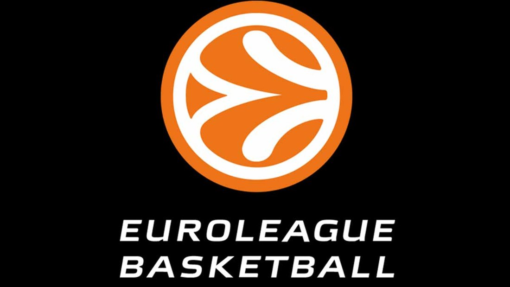

АБА лига је регионална кошаркашка лига у којој се такмиче клубови из Србије, Хрватске, Босне и Херцеговине, Словеније, Црне Горе и Македоније. У прошлости су по специјалном позиву Јадранске кошаркашке асоцијације у лиги учествовали и тимови из Израела, Мађарске, Бугарске и Чешке.
Лига постоји упоредо са домаћим првенствима у свакој земљи. Сви тимови играју у АБА лиги и првенству своје земље. Јадранска кошаркашка асоцијација, која организује АБА лигу, је пуноправни члан УЛЕБ-а. Од сезоне 2017/18. постоји Друга АБА лига и Суперкуп АБА лиге.
Због спонзорских разлога Јадранска кошаркашка лига је позната као Гудјер лига у периоду од 2001. до 2006. године, НЛБ лига у периоду од 2006. до 2011. године и АБА лига ј.т.д. од 2016. године.
Лига је инспирисала покретање сличних регионалних лига широм Европе као што су: Балтичка лига, Балканска лига и ВТБ лига.
Oснивање лиге
Јадранска кошаркашка лига је основана 2001. године од стране представника Босне, Будућности, Цибоне и Унион Олимпије у у коју су се укључили и други кубови из Босне и Херцеговине, Словеније и Хрватске.
Прве сезоне се у лиги такмичило 12 клубова, а лига добија назив по спонзору Гудјер лига.
Утврђен је систем такмичења по којем се регуларни део сезоне игра по двокружном бод систему, док се о победнику лиге одлучује на фајнал-фору. Формат завршнице је након 2004. године често мењан, али се такмичење у регуларном делу сезоне одвија по истом систему.
У првој сезони Јадранске кошаркашке лиге титулу осваја Унион Олимпија. У другој сезони, као први представник Србије, учествује Црвена звезда. У овој сезони међу учесницима био је и израелски представник Макаби Тел Авив. Иако је Макаби био први фаворит за освајање наслова првака, титулу је освоји Задар победом у финалу резултатом 91:88.
ТИМОВИ СА НАЈВИШЕ ТИТУЛА АБА ЛИГЕ
КЛУБ
БРОЈ ТИТУЛА
СЕЗОНЕ КОЈЕ СУ ОСВАЈАЛИ
Партизан
6
2007,2008,2009,2010,2011,2013
Црвена звезда
4
2015,2016,2017,2019
ФМП
2
2004,2006
Цибона
1
2014
Олимпија Љубљана
1
2002
Евролига

Евролига (енгл. EuroLeague) најјаче је и најважније клупско професионално кошаркашко такмичење у Европи.
У њему учествује велики број клубова из већине земаља Европе.
Такмичењем управља УЛЕБ, удружење европских професионалних лига.
Клубови из Израела, чија је цела територија у Азији, такође учествују у овом такмичењу.
Историја
У досадашњој историји Евролига је пуно променила како концепт тако и систем такмичења.
У почетку су најбољи тимови из већине земаља учествовале у њој.
Тада је првацима држава било гарантовано место.
Међутим са великим упливом финансија у спорт, тако је кошарка постала игра у којој је новац заузимао веома битно место.
Из тих разлога квалитет се концентрисао углавном у финансијски јаким земљама или веома талентованим.
Зато су поједине земље добиле више од једног представника, а у новије време поједини представници на основу својих добрих сезона у континуитету су потписали уговоре са Евролигом.
Један од шесторице оснивача био је Бора Станковић.
Национална кошаркашка асоцијација (енгл. National Basketball Association), позната по свом акрониму НБА (енгл. NBA), је водећа професионална кошаркашка лига у САД и Канади.
У трци за освајање шампионског прстена учествује 29 тимова из Сједињених Америчких Држава и један тим из Канаде.
НБА је активни члан кошаркашког савеза САД.
Историја
Америчка кошаркашка асоцијација (енгл. American Basketball AssociationABA), позната по свом акрониму АБА (енгл. ABA), је кошаркашка лига коју су 1946. године основали власници великих спортских дворана.
Иако је и раније било покушаја оснивања професионалне кошаркашке лиге, по први пут је основана кошаркашка лига у којој су се утакмице играле у већим градовима и дворанама.
Утакмица између Торонто хаскиса и Њујорк Никса, одиграна 1. новембра 1946, била је прва званична утакмица НБА лиге.
Лига добија назив НБА након спајања БАА и НБЛ, а број тимова се повећава на 17.
Следећих година НБА запада у кризу, па је 1954. лига имала само осам клубова, што је најмање у историји лиге.